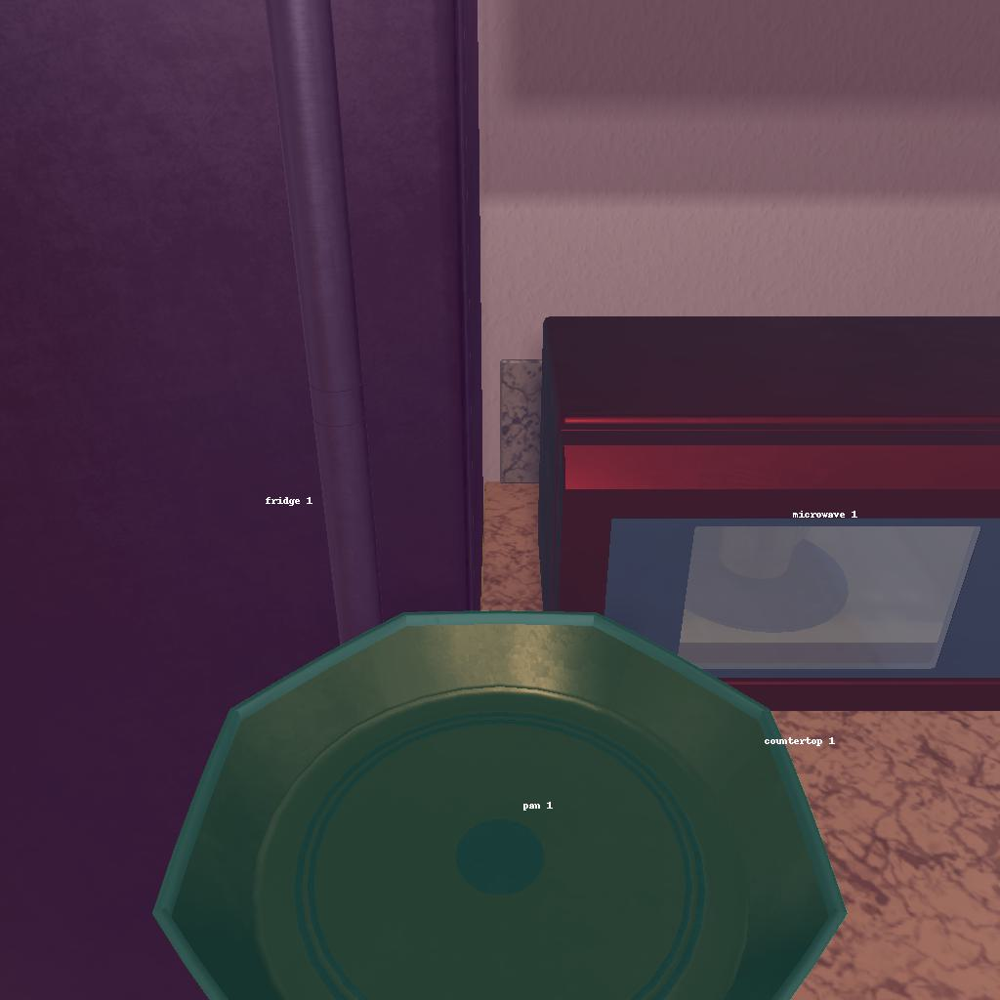

---------------------------------------------------------task: 18---------------------------------------------------------
--------------------------------------------------------------------------------------------------------------------------------------------------------------------
--------------------------------------------------------------------------------------------------------------------------------------------------------------------
Step:--------------------------------------------------------------------------17-------------------------------------------------------------------------------
----------------------------------------
VLM Prompt:
Image1:
**Instruction**
1. Analyze the provided image to identify all visible household objects, focusing on those relevant to the task description "cool some pot and put it in cabinet."
2. Use the analysis of the image and the task hint "The agent must find an object of the desired type, pick it up, go to a fridge, cool the object with the fridge, then find the correct location to place it, and put it down there. The agent does not need to use the fridge button or open the fridge to cool the object, and the agent just needs to do action that is "cool the object with the fridge"." to answer the question: what is the most reasonable action in the choices for the task description "cool some pot and put it in cabinet"?
4. Decide and write the answer using the template: The answer is: (i): , where i is the real number. If there is no desired object in the image, search every place based on **Initial Observation** to find the object. And if no one is exactly correct, choose a similar answer.
**Initial Observation**
You are in the middle of a room. Looking quickly around you, you can see cabinet (1-20), countertop (1-3), coffeemachine (1), toaster (1), sink (1), fridge (1), microwave (1), garbagecan (1), drawer (1-3), sinkbasin (1), stoveburner (1-4), shelf (1-3)
**Answer Choices**
(1): go to cabinet 2
(2): go to cabinet 3
(3): go to cabinet 4
(4): go to cabinet 5
(5): go to cabinet 6
(6): go to countertop 1
(7): go to coffeemachine 1
(8): go to cabinet 7
(9): go to toaster 1
(10): go to cabinet 8
(11): go to sink 1
(12): go to microwave 1
(13): go to garbagecan 1
(14): go to cabinet 9
(15): go to cabinet 10
(16): go to countertop 2
(17): go to cabinet 11
(18): go to cabinet 12
(19): go to drawer 1
(20): go to countertop 3
(21): go to drawer 2
(22): go to cabinet 13
(23): go to sinkbasin 1
(24): go to cabinet 14
(25): go to drawer 3
(26): go to stoveburner 1
(27): go to stoveburner 2
(28): go to stoveburner 3
(29): go to cabinet 15
(30): go to stoveburner 4
(31): go to cabinet 16
(32): go to cabinet 17
(33): go to cabinet 18
(34): go to cabinet 19
(35): go to cabinet 20
(36): go to shelf 1
(37): go to shelf 2
(38): go to shelf 3
(39): open fridge 1
(40): close fridge 1
(41): put pan 1 in/on fridge 1
(42): cool pan 1 with fridge 1
(43): examine pan 1
(44): examine fridge 1
**Answer**
Let's think step by step by following the instructions.
----------------------------------------
----------------------------------------
Original Response:
The task description is "cool some pot and put it in cabinet." According to the task hint, the agent must find an object of the desired type (in this case, a pot), pick it up, go to a fridge, cool the object with the fridge, then find the correct location to place it, and put it down there.
In the provided image, we can see a pan (pan 1) and a fridge (fridge 1). Although the task description mentions a pot, a pan is a similar type of object used for cooking, so it is reasonable to assume that pan 1 is the object that needs to be cooled. The agent does not need to use the fridge button or open the fridge to cool the object. The instruction is to simply "cool the object with the fridge."
Based on the Initial Observation, we know there are several cabinets in the room. However, the image does not show any cabinets, so we cannot select a specific cabinet to put the pan in after cooling it. Therefore, we will focus on the action related to cooling the pan with the fridge.
Among the answer choices, the action that directly relates to the task of cooling the pan with the fridge is (42): cool pan 1 with fridge 1.
The answer is: (42): cool pan 1 with fridge 1.
----------------------------------------
----------------------------------------
>>> Refine Original VLM Response and Get Pure Action: cool pan 1 with fridge 1
----------------------------------------
-----------------------------------------------------------------
Running time: 14.592139720916748 seconds
Total Money: 6.4872400000000034
-----------------------------------------------------------------
-----------------------------------------------------------------
Text Observation:You cool the pan 1 using the fridge 1.
-----------------------------------------------------------------
UNSUCCEED